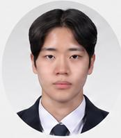

AN INTERACTIVE DESIGN PORTFOLIO 01 — 06
BEYOND
THE ORDINARY.
상상을 실현하는 디자이너
김준서의 세계에 오신 걸 환영합니다.
이 화면은 입장 버튼을 누르면 열립니다.
CLICK TO CROSS THE EVENT HORIZON.
SCROLL UNAVAILABLE UNTIL ENTRYDESIGN IS A JOURNEY INTO THE UNKNOWN
✳ BEHIND THE UNIVERSE
HELLO,
I'M JUNSEO.
상상에서 시작한 아이디어가
누군가의 새로운 경험이 되는 순간.
그 순간을 만들고 싶은 디자이너 김준서입니다. 웹과 앱의 경험을 설계하고, 직관적인 인터페이스와 기억에 남는 인터랙션을 고민합니다.
UI / UXWEB DESIGNINTERACTIONVISUAL
EXPLORE THE WORK

BEHIND THE SCREEN ↗
CREATIVE FOCUS / DIGITAL EXPERIENCES01 — 05 SELECTED WORKS
02 / THE WORK
IDEAS
IN ORBIT.
스크롤을 내리면 작업물이 하나씩 나타납니다.
궁금한 프로젝트를 클릭해 영상과 작업 과정을 확인하세요.